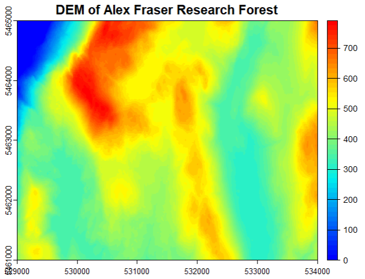
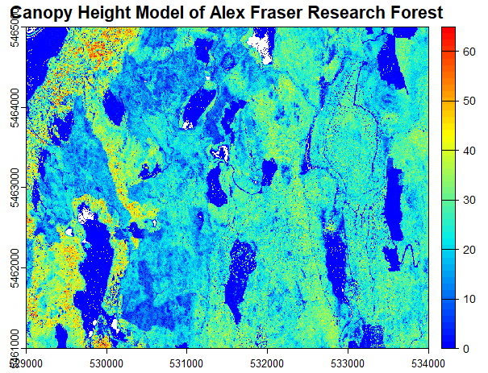
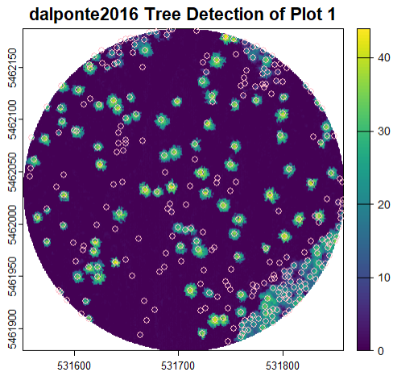

Show/Hide Code
library(lidR)
library(terra)
library(tidyverse)
library(rgl)
library(htmlwidgets)
# set working directory
setwd("~/GEM 521/Lab 5/Data")
wd <- "~/GEM 521/Lab 5/Data" # create a variable string working directoryIn this report, I preprocess and analyze LiDAR data using R and various geospatial libraries such as lidR, terra, and tidyverse. I begin by setting up my working directory and loading the required packages. Then, I work with filtered LiDAR point clouds by reading a .las dataset into an LAScatalog object, summarizing the data, and visualizing it.
Next, I generate a Digital Elevation Model (DEM) from the LiDAR point cloud using a TIN (Triangulated Irregular Network) interpolation approach. I apply a color palette to enhance the visualization and plot the DEM to inspect elevation variations across the study area.
In addition to generating a Digital Elevation Model (DEM), I perform individual tree detection (ITD) using the lidR package. Specifically, I implement the Li et al. (2012) and Dalponte et al. (2016) methods to identify and segment individual trees from the LiDAR point cloud.
The Li et al. (2012) method relies on a local maxima filtering approach applied to a Canopy Height Model (CHM). I smooth the CHM to reduce noise and extract tree tops using a variable window size, ensuring better accuracy in detecting dominant trees and visualize the detected trees and assess the segmentation results.
The Dalponte et al. (2016) method incorporates a marker-controlled watershed segmentation, which refines tree crown delineation based on spectral and structural characteristics. Using a Gaussian smoothing filter and use the tree segmentation function in lidR to identify tree crowns, I compare the results with the Li (2012) method to evaluate their effectiveness. Throughout this process, I fine-tune parameters such as smoothing intensity, window size, and threshold values to optimize tree detection accuracy. The results allow me to assess the effectiveness of these ITD methods in forest structure analysis and remote sensing applications.
The first thing we need to produce is a Digital Elevation Model. This is so we can normalize the LiDAR data to an accurate elevation so we can extract just the points we need to create our models.
# read filtered .las into LAScatalog
filtered_cat_mkrf <- readLAScatalog("~/GEM 521/Lab 5/Data/Filtered")
summary(filtered_cat_mkrf)
plot(filtered_cat_mkrf)
# create color palette
col_1 <- height.colors(50)
# create DEM
dem_allLAS_mkrf <- rasterize_terrain(filtered_cat_mkrf, 2, tin())
# plot DEM using color palette
plot(dem_allLAS_mkrf, col = col_1,
main = 'DEM of Alex Fraser Research Forest') #plot in 2D
After we have the DEM, we can normalize the LAS catalog to the DEM we just created. Once normalize, we can then rasterize the LAS in order to plot the Canopy Height Model (CHM). This is a model that shows the height, or tops, of the trees.
# read normalized las into catalog to continue processing
norm_cat_mkrf <- readLAScatalog("~/GEM 521/Lab 5/Data/Normalized")
# add LAScatalog enginge option to filter undersired data points
opt_filter(norm_cat_mkrf) <- '-drop_z_below 0 -drop_z_above 65'
# ensure the entire study area was processed
plot(norm_cat_mkrf)
summary(norm_cat_mkrf)
# plot the CHM just to make sure things look good
plot(chm_mkrf, col = col_1,
main = 'Canopy Height Model of Alex Fraser Research Forest') # plot in 2D
Now that we have our normalized CHM of the study site, we can start to work on the individual tree detection. First we need to access the field data where the plot data was recorded. There were four plots that were extracted, with a radius of 154 meters that were extracted, using given coordinates based on the .csv. After extraction, we can read in the plots as LAS files to compute metrics as well as visualize them. We can see one of the plots visualized in 3D below.
# read in csv file with plot locations
tree_plot_table <- read.csv("~/GEM 521/Lab 5/Data/Lab5_Plots.csv")
# set the radius for the plots
radius <- 154
# for loop to extract the 4 plots needed for the tree detection
for(i in 1:nrow(tree_plot_table)){ # run the loop until i = the number of rows in 'plot_table' (4)
plot_cent <- c(tree_plot_table$X[i], tree_plot_table$Y[i]) # extract plot center
plot_las <- clip_circle(norm_cat_mkrf, plot_cent[1], plot_cent[2], radius) # clip plot from norm_cat_mkrf
output_file <- paste("~/GEM 521/Lab 5/Data/Plots/Plot_", i, ".las", sep = "") # output directory as string
writeLAS(assign(paste("Plot_", i, sep = ""), plot_las), output_file) # write'TD_Plot_i' to output dir.
}
# read in the plots
plot_1 <- readLAS("~/GEM 521/Lab 5/Data/Plots/Plot_1.las")
plot_2 <- readLAS("~/GEM 521/Lab 5/Data/Plots/Plot_2.las")
plot_3 <- readLAS("~/GEM 521/Lab 5/Data/Plots/Plot_3.las")
plot_4 <- readLAS("~/GEM 521/Lab 5/Data/Plots/Plot_4.las")
# visualize the plots and compare
plot(plot_1)Below is a interactive visualization of one of the extracted plots from Malcom Knapp Research Forest. We will be detecting each one of these trees using two different tree detection methods.
Pretty neat! Now lets actually detect some trees with some built in tree detection algorithms. The first one we are going to use is built by li(2012). We are going to do this for all of the 4 plots we extracted.
# segment each plot using li2012 algorithm
plot_1_seg <- segment_trees(plot_1, li2012(dt1 = 1.5, dt2 = 2, R = 2, Zu = 15, hmin = 2, speed_up = 10))
plot_2_seg <- segment_trees(plot_2, li2012(dt1 = 1.5, dt2 = 2, R = 2, Zu = 15, hmin = 2, speed_up = 10))
plot_3_seg <- segment_trees(plot_3, li2012(dt1 = 1.5, dt2 = 2, R = 2, Zu = 15, hmin = 2, speed_up = 10))
plot_4_seg <- segment_trees(plot_4, li2012(dt1 = 1.5, dt2 = 2, R = 2, Zu = 15, hmin = 2, speed_up = 10))
# write each segmented plot to a .las file
writeLAS(plot_1_seg, "plot_1_seg.las")
writeLAS(plot_2_seg, "plot_2_seg.las")
writeLAS(plot_3_seg, "plot_3_seg.las")
writeLAS(plot_4_seg, "plot_4_seg.las")
# visualize each plot
plot(plot_1_seg, color = 'treeID')
plot(plot_2_seg, color = 'treeID')
plot(plot_3_seg, color = 'treeID')
plot(plot_4_seg, color = 'treeID')Lets see how it did!
# segment each plot using li2012 algorithm
plot_1_seg <- segment_trees(plot_1, li2012(dt1 = 1.5, dt2 = 2, R = 2, Zu = 15, hmin = 2, speed_up = 10))
# Open a 3D rendering window for Li et al.2012
open3d()
plot(plot_1_seg, color = "treeID")
rglwidget_plot1_li <- rglwidget()
saveWidget(rglwidget_plot1_li, file = "interactive_plot1_li.html", selfcontained = TRUE)Lets use another algorith, created by Dalponte Coomes (2016) this time. Same thing, we are going to focus on the first plot we extracted.
# create chm for plot 1 with given pitfree values
chm_plot1 <- rasterize_canopy(plot_1, res = 0.5,
algorithm = pitfree(c(0, 10, 20, 30), subcircle = 0.2))
# use the locate_trees to 'locate the trees' using default values
plot1_lmf <- locate_trees(chm_plot1, lmf(ws = 5, hmin = 2, shape = "circular", ws_args = "z"))
# plot in 2D the CHM of plot 1 and the located trees using the lmf algorithm
plot(chm_plot1, main = "dalponte2016 Tree Detection of Plot 1")
plot(plot1_lmf, add = TRUE, col = 'pink')
Hmm… Didn’t seem too do too well… Lets take a look at it in 3D to see whats up.
# create chm for plot 1 with given pitfree values
chm_plot1 <- rasterize_canopy(plot_1, res = 0.5,
algorithm = pitfree(c(0, 10, 20, 30), subcircle = 0.2))
# use the locate_trees to 'locate the trees' using default values
plot1_lmf <- locate_trees(chm_plot1, lmf(ws = 5, hmin = 2, shape = "circular", ws_args = "z"))
# segment point cloud using dalponte2016
plot1_dalp <- segment_trees(plot_1, dalponte2016(chm_plot1, treetops = plot1_lmf))
# Open a 3D rendering window for Li et al.2012
open3d()
plot(plot1_dalp, color = "treeID")
rglwidget_plot1_dalp <- rglwidget()
saveWidget(rglwidget_plot1_dalp, file = "interactive_plot1_dalp.html", selfcontained = TRUE)Can you find out why, in the 2D tree detection plot, that the algorithm detected trees where there seemingly were not any?